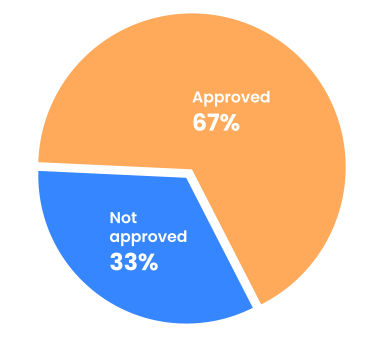

Good morning, Kate.
Are
you ready
to take on
the day?
- » Update your password
- » Submit your phonenumber
- » Verify your e-mail
Left to do:
Notifications
-
Today
Web Development class has been canceled today...
-
February 8
Relational Database Exercise to be handed in at December 12...
-
February 16
I'm on vacation - Look at Fronter for more info
Stats
Assignments
Schedule
-
Today
Database
10:45 - 13:35
Database
13:45 - 16:35
-
Tomorrow
Web Development
10:45 - 13:35
Web Development
13:45 - 16:35
My Courses
Grades
1. Semester
-
Web Development
12
-
User Experience
00
-
Database
12
2. Semester
-
Django Python
12
-
React Native
12
-
Web Developments
12